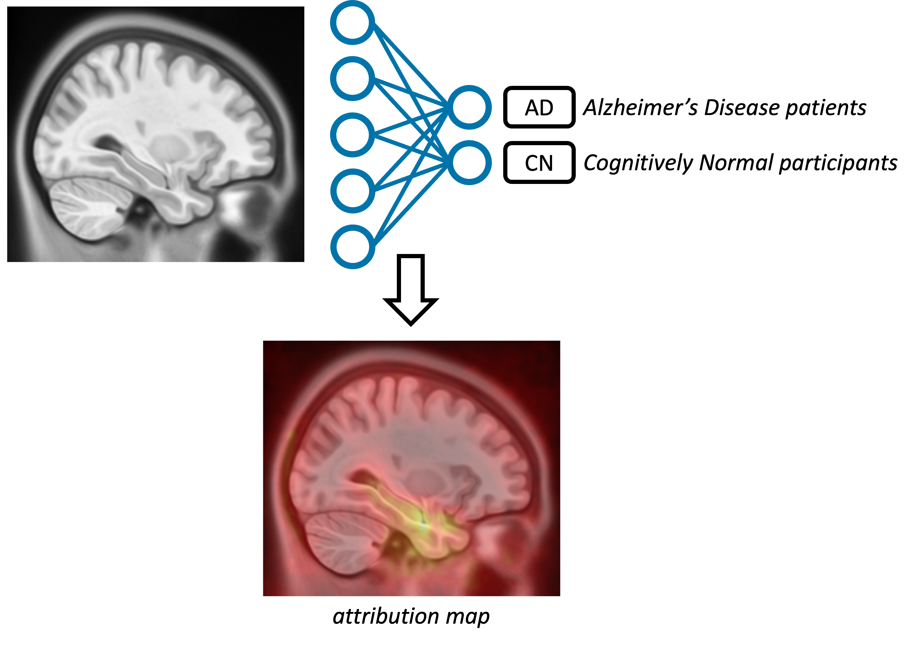

About
Reproducibility is a key component of science, as the replication of findings is the process by which they become knowledge. It is widely considered that many fields of science, including medical imaging, are undergoing a reproducibility crisis. This has led to the publications of various guidelines to improve research reproducibility, such as the checklist proposed by MICCAI. On top of a clear description of the materials, methods and results, the checklist includes several items related to the code, which correspond to the elements of the ML Code Completeness Checklist in use at NeurIPS. If such checklists constitute useful guides, some users may need further instructions to actually comply with them. This tutorial aims to help MICCAI members adopt good machine learning research practices to enable reproducibility.
Learning objectives of the tutorial include:
- An understanding of the different meanings of reproducibility;
- Raising awareness and improving participants’ ability to detect possible sources of irreproducibility in scientific articles;
- A good knowledge of the main data management principles and of the best coding and machine learning research practices;
- A clear view of the tools that can be used to perform reproducible research.
Keynote

Dr. Koustuv Sinha
Meta AI New York - Fundamental AI ResearchKoustuv Sinha is a Research Scientist at Meta AI New York, in the Fundamental AI Research (FAIR) team. He did his PhD from McGill University (School of Computer Science) and Mila (Quebec AI Institute), supervised by Joelle Pineau, in the wonderful city of Montreal, QC, Canada. He spent a significant portion of his PhD being a Research Intern (STE) at Meta AI (FAIR), Montreal.
He now is an associate editor of ReScience C, a peer reviewed journal promoting reproducible research, and he is the lead organizer of the annual Machine Learning Reproducibility Challenge. His work has been covered by several news outlets in the past, including Nature, VentureBeat, InfoQ, DailyMail and Hindustan Times.
Program (first draft - might be updated)
| 45min | Keynote Koustuv Sinha (Meta AI New York) |
| 45min | Presentation of the MICCAI reproducibility checklist: practical tips to achieve reproducibility | 15min | ☕ Coffee Break |
| 1h15 | Critical review tutorial (in teams) |
| During this tutorial, participants will be teamed up to conduct critical reviews of pairs of (fake) papers and GitHub repos all performing the same task. Each reproducibility flaw correctly identified will score points. At the end of the session the team with the highest score will earn a team prize! | |
| 0h30 | Reproducibility tutorial (solo) |
| During this last part, the participants will have access to a paper and the corresponding repo which meets all the requirements of the MICCAI reproducibility checklist. |
Exercise 1 - Critical review tutorial
The goal of this first exercise is to fill an adapted version of the MICCAI reproducibility checklist for different fake papers.
Content of the papers
All the papers have the same content: their objective is to train a deep learning network to perform a binary classification, Alzheimer's disease patients VS cognitively normal participants, using brain T1-MRI.
They also all have the same organisation. The abstract and introduction sections are all identical and do not include any useful information, except the link to the corresponding GitHub repo at the end of the introduction.
Content of the checklist
For all papers, the participants have to fill the same checklist. Each section of the checklist is related to one or more sections of the article or the GitHub repo.
-
Data set - Materials, GitHub repo
- Availability - Open-source / Semi-public / On request / Not findable
- Statistics on the selected participants - Exhaustive / Minor / None
- Selection of participants - Reproducible / Described / Not described
- Reference (citation / link) - Yes / No
-
Code - GitHub repo
- Availability - Open-source / Semi-public / On request / Not findable
- Dependencies - Fixed versions / No versioning / None
- Training code - All experiments / Some experiments / None
- Evaluation code - All experiments / Some experiments / None
- Explainability code - All experiments / Some experiments / None
- Pre-trained models - Open-source / On request / None
- Minimal list of commands to run the code - All experiments / Some experiments / None
-
Computational setup - Methods
- Runtime - Yes / No / Not applicable
- Memory footprint - Yes / No / Not applicable
- Computing infrastructure - Yes / No / Not applicable
-
Training - Methods, Results
- Hyperparameter search - All experiments / Some experiments / None
- Hyperparameter values - All experiments / Some experiments / None
- Parameter sensitivity - Exhaustive analysis / Minor analysis / None
-
Evaluation - Methods, Results, Conclusion
- Evaluation metrics - Reproducible / Described / Not described
- Error bars / confidence intervals - Yes / No / Not applicable
- Statistical significance - Yes / No / Not applicable
- Study of failure modes - Yes / No / Not applicable
- Clinical significance - Discussed / Not discussed / Not applicable
-
Explainability - Methods, Results
- Mathematical setting - Reproducible / Described / Not described
- Description of assumptions - Yes / No
- Analysis - Quantitative / Qualitative / None
Links to the checklists
The papers will be shared on the day of the tutorial, but you can already find the checklists here:Organizers
This reproducibility tutorial is organized by Ninon Burgos and Elina Thibeau-Sutre. You can reach us via e-mail.
Dr. Ninon Burgos (CNRS - Paris Brain Institute - ARAMIS Lab) is interested in the processing and analysis of neuroimages, mainly image synthesis, on the use of images to guide diagnosis, and on the application of these methods to the clinic.
Dr. Elina Thibeau-Sutre (Mathematics of Imaging and AI - University of Twente) is interested in the robustness and interpretability of deep learning applied to medical problems such as colorectal cancer surgery (project awarded by CMI-NEN) and subdural brain hematoma treatment (project awarded by PIHC 2023).